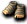
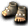
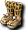

通常｜鏡之城｜迪姆萊特系｜雷歐加爾特 ｜斯科爾菲吉｜狀態異常防禦
名稱為橘色的是可以附魔的物品。另外，未鑑定名稱是該道具在未鑑定狀態下的名稱。
提供情報或編輯請求，請到情報提供公佈欄、編輯公佈欄。
一般
| 名稱 | 價格 | 限制 | 職業 | Wei | 取得方式 |
 武道家護腕 武道家護腕 | 10,000 | Lv11 | 戰修盜騎阿聖魔預吟 | 2 | Q:德佩羅的請託 |
| 能力 | AC-1 DAM+1 HP+5 |
| 名稱 | 價格 | 限制 | 職業 | Wei | 取得方式 |
| 銀製訓練腳環 | 15,000 | Lv31 | 戰修盜騎阿聖魔預吟 | 2 | Q:可愛的脫離新手 |
| 能力 | AC-1 DAM+2 HP+10 |
| 備註 | 在腳部疊放銀的巴爾奇，使衝擊加倍 |
| 名稱 | 價格 | 限制 | 職業 | Wei | 取得方式 |
| 金製訓練腳環 | 20,000 | Lv41 | 戰修盜騎阿聖魔預吟 | 2 | Q:迪格班克地城探險 |
| 能力 | AC-1 DAM+3 HP+15 |
| 備註 | 在腳部疊放金的巴爾奇，使衝擊加倍 |
| 名稱 | 價格 | 限制 | 職業 | Wei | 取得方式 |
 徽章奈爾 | 30,000 | Lv50 | 戰修盜騎阿聖魔預吟 | 2 | 魔界村：雜貨店 |
| 能力 | AC-1 DAM+3 HIT+3 |
| 名稱 | 價格 | 限制 | 職業 | Wei | 取得方式 |
| 徽章蒂拉蘭 | 30,000 | Lv50 | 戰修盜騎阿聖魔預吟 | 2 | 魔界村：雜貨店 |
| 能力 | AC-1 DAM+3 HIT+3 |
| 名稱 | 價格 | 限制 | 職業 | Wei | 取得方式 |
| 徽章克拉 | 30,000 | Lv50 | 戰修盜騎阿聖魔預吟 | 2 | 魔界村：雜貨店 |
| 能力 | AC-1 DAM+3 DEX+3 |
| 名稱 | 價格 | 限制 | 職業 | Wei | 取得方式 |
| 徽章石腿 | 30,000 | Lv50 | 戰修盜騎阿聖魔預吟 | 2 | 魔界村：雜貨店 |
| 能力 | AC-1 DAM+3 HP+50 |
| 名稱 | 價格 | 限制 | 職業 | Wei | 取得方式 |
| 徽章鐵腿 | 30,000 | Lv50 | 戰修盜騎阿聖魔預吟 | 2 | 魔界村：雜貨店 |
| 能力 | AC-1 DAM+3 SP+40 |
| 名稱 | 價格 | 限制 | 職業 | Wei | 取得方式 |
 黃金腳環 黃金腳環 | Lv51 | 戰修盜騎阿聖魔預吟 | 5 | Q:任務手冊[初級]完成褒章 | |
| 能力 | AC-3 MC-5 DAM+3 HIT+3 CON+5 |
| 備註 | 密密地編織金紗並附上魔法的巴爾博號。 |
| 名稱 | 價格 | 限制 | 職業 | Wei | 取得方式 |
| 幻影奈爾 | Lv51 | 戰修盜騎阿聖魔預吟 | 6 |  什麼都有彩券 什麼都有彩券 | |
| 能力 | AC-4 MC-6 DAM+4 HIT+3 CON+7 HP+30 SP+10ADDown3% MDDown3% |
| 備註 | 提升到極限的修道士腳環。但是因為其強大的力量，經過時間就會消失。參考：1/2 16:12領取的情況，有效期限至1/5 16:11 |
| 名稱 | 價格 | 限制 | 職業 | Wei | 取得方式 |
 四術腳環 四術腳環 | ? | Lv51 | 戰修盜騎阿聖魔預吟 | 5 | 悠久天狗:滿月的櫻花村 |
| 能力 | AC-2 MC-1 DAM+2 HIT+3 CON+2 DEX+1 |
| 備註 | 擁有解咒之力的腳環。有2週的期限。 |
| 名稱 | 價格 | 限制 | 職業 | Wei | 取得方式 |
| 重型防禦奈爾 | 55,000 | Lv55 | 戰修盜騎阿聖魔預吟 | 4 | Q:赫爾西昂支線任務 |
| 能力 | AC-2 MC-2 ADDown1% MDDown3% |
| 備註 | 強化後的防護型腳部防護具 |
| 名稱 | 價格 | 限制 | 職業 | Wei | 取得方式 |
 卡波耶拉奈爾 | 60,000 | Lv61,FLv21 | 戰修盜騎阿聖魔預吟 | 3 |  梅杜莎(橙) 梅杜莎(橙) |
| 能力 | AC-2 DAM+4 HIT+3 |
| 備註 | 輔助修道士的傷害與命中率 |
| 名稱 | 價格 | 限制 | 職業 | Wei | 取得方式 |
| 卡波耶拉蒂拉蘭 | 60,000 | Lv61,FLv21 | 戰修盜騎阿聖魔預吟 | 3 | 梅杜莎(黃) |
| 能力 | AC-2 DAM+3 HIT+4 |
| 備註 | 輔助修道士的傷害與命中率 |
| 名稱 | 價格 | 限制 | 職業 | Wei | 取得方式 |
| 卡波耶拉克拉 | 60,000 | Lv61,FLv21 | 戰修盜騎阿聖魔預吟 | 3 | [石頭蝙蝠](紅) |
| 能力 | AC-2 DAM+3 DEX+4 |
| 備註 | 輔助修道士的傷害與DEX |
| 名稱 | 價格 | 限制 | 職業 | Wei | 取得方式 |
| 卡波耶拉石腿 | 60,000 | Lv61,FLv21 | 戰修盜騎阿聖魔預吟 | 3 | 梅杜莎(黃) |
| 能力 | AC-2 DAM+3 HP+70 |
| 備註 | 輔助修道士的傷害與HP |
| 名稱 | 價格 | 限制 | 職業 | Wei | 取得方式 |
| 卡波耶拉鐵腿 | 60,000 | Lv61,FLv21 | 戰修盜騎阿聖魔預吟 | 3 | [石頭蝙蝠](灰) |
| 能力 | AC-2 DAM+3 SP+60 |
| 備註 | 輔助修道士的傷害與SP |
| 名稱 | 價格 | 限制 | 職業 | Wei | 取得方式 |
| 覺醒腳鍊 | 0 | Lv61 | 戰修盜騎阿聖魔預吟 | 6 | 2010回歸箱 |
| 能力 | AC-4 MC-2 HP+10 CON+5 DEX+5 ADDown3% MDDown2% |
| 備註 | 在30天內，可覺醒被封印能力的腳環。期間過後會消失 |
| 名稱 | 價格 | 限制 | 職業 | Wei | 取得方式 |
| 守護奈爾 | 250,000 | Lv65 | 戰修盜騎阿聖魔預吟 | 6 |  寵物玩偶 寵物玩偶 |
| 能力 | AC-4 MC-6 DAM+4 HIT+3 CON+7 |
| 備註 | 強化黃金腳環的腳環。混入白金進一步強化 |
| 名稱 | 價格 | 限制 | 職業 | Wei | 取得方式 |
 伊卡洛斯科扎克 伊卡洛斯科扎克 | - | Lv71,FLv5 | 戰修盜騎阿聖魔預吟 | 4 | Q:伊卡洛斯的孩子們-2 |
| 能力 | AC-3 DAM+5 HIT+3 |
| 備註 | 從伊卡洛斯的梅克特那裡得到的腳環 |
| 名稱 | 價格 | 限制 | 職業 | Wei | 取得方式 |
| 科扎克奈爾 | 90,000 | Lv71,FLv31 | 戰修盜騎阿聖魔預吟 | 4 | [艾米斯](綠) |
| 能力 | AC-3 DAM+5 HIT+3 |
| 備註 | 輔助修道士的傷害與命中率 |
| 名稱 | 價格 | 限制 | 職業 | Wei | 取得方式 |
| 科扎克蒂拉蘭 | 90,000 | Lv71,FLv31 | 戰修盜騎阿聖魔預吟 | 4 | |
| 能力 | AC-3 DAM+3 HIT+5 |
| 備註 | 輔助修道士的傷害與命中率 |
| 名稱 | 價格 | 限制 | 職業 | Wei | 取得方式 |
| 科扎克克拉 | 90,000 | Lv71,FLv31 | 戰修盜騎阿聖魔預吟 | 4 | [艾米斯]（紫）裝備彩券 |
| 能力 | AC-3 DAM+3 DEX+5 |
| 備註 | 輔助修道士的傷害與DEX |
| 名稱 | 價格 | 限制 | 職業 | Wei | 取得方式 |
| 科扎克石腿 | 90,000 | Lv71,FLv31 | 戰修盜騎阿聖魔預吟 | 4 | |
| 能力 | AC-3 DAM+3 HP+90 |
| 備註 | 輔助修道士的傷害與HP |
| 名稱 | 價格 | 限制 | 職業 | Wei | 取得方式 |
| 科扎克鐵腿 | 90,000 | Lv71,FLv31 | 戰修盜騎阿聖魔預吟 | 4 | 裝備彩券 |
| 能力 | AC-3 DAM+3 SP+80 |
| 備註 | 輔助修道士的傷害與技能點數 |
| 名稱 | 價格 | 限制 | 職業 | Wei | 取得方式 |
| 堅不可摧奈爾 | - | Lv75、FLv15 | 戰修盜騎阿聖魔預吟 | 寵物玩偶 | |
| 能力 | AC-3 MC-3 CON+2 ADDown2% MDDown4% |
| 備註 | 擁有高性能的防禦型腳環 |
| 名稱 | 價格 | 限制 | 職業 | Wei | 取得方式 |
| 博道奈爾 | 120,000 | Lv81,FLv41 | 戰修盜騎阿聖魔預吟 | 5 | 裝備彩券 |
| 能力 | AC-4 DAM+6 HIT+3 |
| 備註 | 輔助修道士的傷害與命中率 |
| 名稱 | 價格 | 限制 | 職業 | Wei | 取得方式 |
| 博道蒂拉蘭 | 120,000 | Lv81,FLv41 | 戰修盜騎阿聖魔預吟 | 5 | 裝備彩券 |
| 能力 | AC-4 DAM+3 HIT+6 |
| 備註 | 輔助修道士的傷害與命中率 |
| 名稱 | 價格 | 限制 | 職業 | Wei | 取得方式 |
| 博道克拉 | 120,000 | Lv81,FLv41 | 戰修盜騎阿聖魔預吟 | 5 | 裝備彩券 |
| 能力 | AC-4 DAM+3 DEX+6 |
| 備註 | 輔助修道士的傷害與DEX |
| 名稱 | 價格 | 限制 | 職業 | Wei | 取得方式 |
| 博道石腿 | 120,000 | Lv81,FLv41 | 戰修盜騎阿聖魔預吟 | 5 | 裝備彩券 |
| 能力 | AC-4 DAM+3 HP+120 |
| 備註 | 輔助修道士的傷害與HP |
| 名稱 | 價格 | 限制 | 職業 | Wei | 取得方式 |
| 博道鐵腿 | 120,000 | Lv81,FLv41 | 戰修盜騎阿聖魔預吟 | 5 | 裝備彩券 |
| 能力 | AC-4 DAM+3 SP+100 |
| 備註 | 輔助修道士的傷害與技能點數 |
| 名稱 | 價格 | 限制 | 職業 | Wei | 取得方式 |
 祝福泰蘭 祝福泰蘭 | Lv85,FLv21 | 戰修盜騎阿聖魔預吟 | 3 |  星之記憶(星座彩券)、 星之記憶(星座彩券)、 被封印的遺物 被封印的遺物 | |
| 能力 | AC-6 MC-4 DAM+3 HIT+5 HP70 SP50 CON+5 |
| 備註 | 受到神的祝福，閃耀金色光芒的修道士及阿修羅的腳環。: |
| 名稱 | 價格 | 限制 | 職業 | Wei | 取得方式 |
| 幻影復仇者護腳[Lv3] | Lv91,FLv30 | 戰修盜騎阿聖魔預吟 | 4 | 怪物圖鑑 不可思議的相簿箱LV4 | |
| 能力 | AC-5 MC-6 DAM+5 HIT+6 CON+5 DEX+2 HP+70 SP+20 MP+20 |
| 備註 | 以簡易精煉魔法強化復仇者護腳的護腳。具備出色的能力。 |
| 名稱 | 價格 | 限制 | 職業 | Wei | 取得方式 |
| 西拉特奈爾 | 150,000 | Lv91,FLv51 | 戰修盜騎阿聖魔預吟 | 6 | 裝備彩券 |
| 能力 | AC-5 DAM+7 HIT+3 |
| 備註 | 輔助修道士的傷害與命中率 |
| 名稱 | 價格 | 限制 | 職業 | Wei | 取得方式 |
| 西拉特蒂拉蘭 | 150,000 | Lv91,FLv51 | 戰修盜騎阿聖魔預吟 | 6 | 裝備彩券 |
| 能力 | AC-5 DAM+3 HIT+7 |
| 備註 | 輔助修道士的傷害與命中率 |
| 名稱 | 價格 | 限制 | 職業 | Wei | 取得方式 |
| 西拉特克拉 | 150,000 | Lv91,FLv51 | 戰修盜騎阿聖魔預吟 | 6 | 裝備彩券 |
| 能力 | AC-5 DAM+3 DEX+7 |
| 備註 | 輔助修道士的傷害與DEX |
| 名稱 | 價格 | 限制 | 職業 | Wei | 取得方式 |
| 西拉特石腿 | 150,000 | Lv91,FLv51 | 戰修盜騎阿聖魔預吟 | 6 | 裝備彩券 |
| 能力 | AC-5 DAM+3 HP+150 |
| 備註 | 輔助修道士的傷害與體力 |
| 名稱 | 價格 | 限制 | 職業 | Wei | 取得方式 |
| 西拉特鐵腿 | 150,000 | Lv91,FLv51 | 戰修盜騎阿聖魔預吟 | 6 | |
| 能力 | AC-5 DAM+3 SP+120 |
| 備註 | 輔助修道士的傷害與技能點數 |
| 名稱 | 價格 | 限制 | 職業 | Wei | 取得方式 |
 毒蛇鱗奈爾 毒蛇鱗奈爾 | Lv91,FLv21 | 戰修盜騎阿聖魔預吟 | 5 | Q:偽鍊金術的證明 | |
| 能力 | AC-4 DAM+5 HIT+3 |
| 備註 | 以恐怖海怪的鱗片製成之物 |
| 名稱 | 價格 | 限制 | 職業 | Wei | 取得方式 |
| 重型堅不可摧奈爾 | Lv95 | 戰修盜騎阿聖魔預吟 | 什麼都有彩券 | | |
| 能力 | AC-4 MC-4 CON+4 ADDown3% MDDown5% |
| 備註 | 熟練的冒險家愛用。專門防禦的最高級腳環 |
| 名稱 | 價格 | 限制 | 職業 | Wei | 取得方式 |
 迪捷雷德護腳 | Lv95,FLv35 | 戰修盜騎阿聖魔預吟 | 4 |  芬里爾的虛像 芬里爾的虛像 | |
| 能力 | AC-5 MC-7 DAM+7 HIT+5 CON+7 HP+70 SP+60 ADDown1% |
| 備註 | 據說是與神對抗的天使們所穿的鞋履 |
| 名稱 | 價格 | 限制 | 職業 | Wei | 取得方式 |
| 蒂亞雷德護腳 | Lv97,FLv45 | 戰修盜騎阿聖魔預吟 | 5 | Q:赫爾西翁升級 | |
| 能力 | AC-6 MC-8 DAM+8 HIT+5 CON+8 HP+80 SP+70 ADDown1% |
| 備註 | 強化迪捷雷德護腳的鞋履 |
| 名稱 | 價格 | 限制 | 職業 | Wei | 取得方式 |
| 暗影護腕 | 2,450,000 | Lv98,FLv50 | 戰修盜騎阿聖魔預吟 | 8 |  暗物質核心(黃色核心) 暗物質核心(黃色核心) |
AC-6 MC-8 DAM+8 HIT+5 STR+2 CON+8 DEX+2HP+80 SP+70 ADDown1%
人們的怨念與怨恨所形成的護腕。
鏡之城
| 名稱 | 價格 | 限制 | 職業 | Wei | 取得方式 |
| (遺忘)格里瑪靈泰蘭 | 42,100 | Lv91,FLv31 | 戰修盜騎阿聖魔預吟 | 8 | |
| 能力 | AC-6 MC-7 DAM+4 HIT+4 HP60 SP10 CON+5 |
| 備註 | 完成使命、即將消失的護脛。3天內，或死亡時消失。不可染色、有專屬 |
| 名稱 | 價格 | 限制 | 職業 | Wei | 取得方式 |
| 格里馬戒指之暴君 | 421,000 | Lv93,FLv41 | 戰修盜騎阿聖魔預吟 | 9 | |
| 能力 | AC-4 MC-5 DAM+4 HIT+4 HP60 SP10 CON5 |
| 備註 | 完成使命、即將消失的鞋履。過30天就會消失。若進行升級，可延長鞋履的壽命。 |
| 名稱 | 價格 | 限制 | 職業 | Wei | 取得方式 |
| (忘卻)格雷亞泰蘭 | Lv100,Flv41Vlv41,Blv41 | 戰修盜騎阿聖魔預吟 | 9 | | |
| 能力 | AC-10 MC-11 DAM+6 HIT+6 CON+7 HP+120 SP+80 |
| 備註 | 3天期限 死亡時消失 交換時專屬 不可染色 不可En |
迪姆萊特系
| 名稱 | 價格 | 限制 | 職業 | Wei | 取得方式 |
| 忘卻的幽光爪靴 | 31,000 | Lv100,Flv71Vlv41,Blv41 | 戰修盜騎阿聖魔預吟 | 9 | 暗影幽靈:塞佩利歐7 |
AC-7 MC-6 DAM+6 HIT+5 CON+7 DEX+2HP+50 MP+20 SP+20 ADDown1%
加工微微發光的魔石製成的腳環， 死亡時消失
死亡時消失
| 名稱 | 價格 | 限制 | 職業 | Wei | 取得方式 |
| 幽光爪靴 | - | Lv100,Flv71Vlv41,Blv41 | 戰修盜騎阿聖魔預吟 | 9 |  迪奧特(塞佩利歐斯帕提姆) 迪奧特(塞佩利歐斯帕提姆) |
| 能力 | AC-7 MC-6 DAM+6 HIT+5 CON+7 DEX+2HP+50 MP+20 SP+20 ADDown1% |
| 備註 | 加工微微發光的魔石製成的腳環。以魔石之力強化，可升級為盧尼克套裝道具。耐久度 100％(不可放地上、使用・交付時專屬、可存銀行) |
| 名稱 | 價格 | 限制 | 職業 | Wei | 取得方式 |
| 盧尼克奈爾 | - | Lv105,FLv81VLv51,BLv51 | 戰修盜騎阿聖魔預吟 | - |  升級 升級 |
| 能力 | AC-8 MC-6 DAM+6 HIT+6 CON+7 DEX+2HP+70 MP+20 SP+20 ADDown1% |
| 備註 | 藉由魔石之力增強光輝的腳環，為修道士與阿修羅專用加工。 |
| 名稱 | 價格 | 限制 | 職業 | Wei | 取得方式 |
| 迪卡盧尼克奈爾 | - | Lv110,FLv91VLv61,BLv61 | 戰修盜騎阿聖魔預吟 | 12 | |
| 能力 | AC-10 MC-6 DAM+7% HIT+6% CON+8 DEX+3HP+90 MP+20 SP+20 ADDown1% |
| 備註 | - |
雷歐加爾特的靈魂
無
斯科爾菲吉的靈魂
無
異常狀態防禦
| 名稱 | 價格 | 限制 | 職業 | Wei | 取得方式 |
| 自由科扎克未鑑定名稱：護腿 | 15,000 | Lv71 | 戰修盜騎阿聖魔預吟 | 4 | 裝備彩券 |
| 能力 | AC-3 DAM+5 HIT+5 HP+30 SP+30 |
| 備註 | 移動異常防禦(PCount:200) |
| 名稱 | 價格 | 限制 | 職業 | Wei | 取得方式 |
| 自由精靈科扎克未鑑定名稱：護腿 | 20,000 | Lv85,Lv21 | 戰修盜騎阿聖魔預吟 | 4 |  冰霜貴族(紅)[阿特歐,貝里亞,皮樂夏,貝魯拉]、九十九之鬼、 冰霜貴族(紅)[阿特歐,貝里亞,皮樂夏,貝魯拉]、九十九之鬼、 夜之指揮官 夜之指揮官 |
| 能力 | AC-5 DAM+7 HIT+7 HP+50 SP+50 |
| 備註 | 移動異常防禦(PCount:200) |